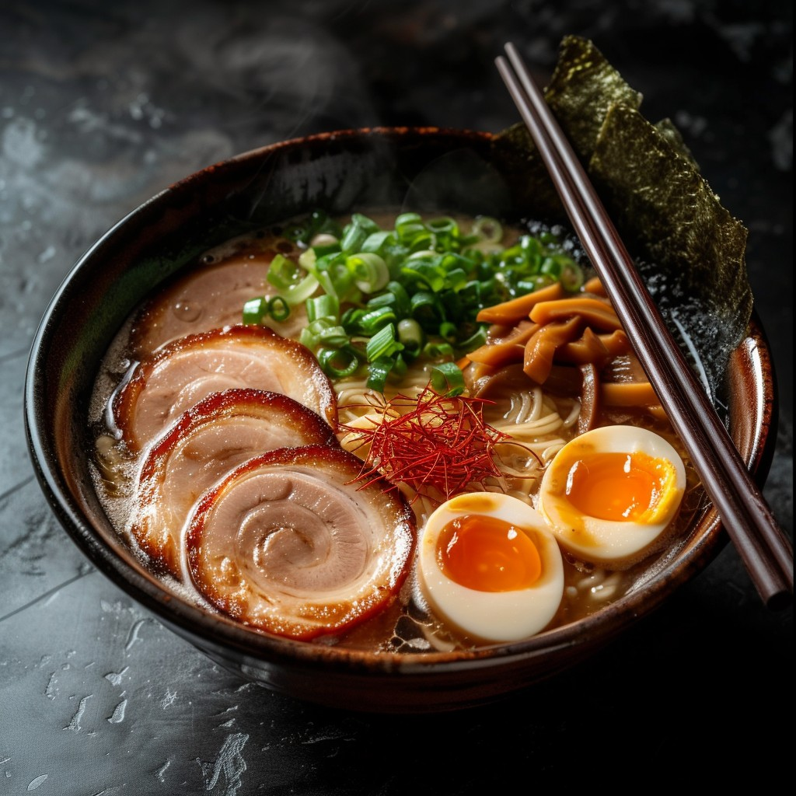

Tonkotsu Ramen

Description
Tonkotsu Ramen is a type of Japanese noodle dish known of its collagen rich, milky coloured flavourful pork based broth. Traditionally it is prepared by boiling pork bones for a long period of time which can last up to 12 hours or more. This type of ramen is particularly popular around Kyushu where it also believed to have originated.
Ingredients
Ramen
- 5 to 6 servings of good quality ramen noodles (you do not want to ruin that 6 hour broth with a crappy noodle)
- Chashu pork
- 5 to 6 pcs boiled eggs
- Negi (spring onions), chopped
- Menma (fermented bamboo shoots), optional
- Roasted Nori squares
Broth
- 3 ⅓ lb pork trotter
- 2 ⅕ lb pork bones
- 1 large onion, roughly chopped
- 1 whole garlic, minced
- Thumb sized ginger, sliced thinly
- 2 pcs leeks, roughly chopped
- 6 pcs dried shiitake mushrooms
- Oil
- Salt